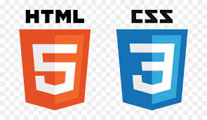

Growing up , I wanted to be a cricketer which is the dream of most Indians. It was not until class IX that my passion for coding and technology began when I was selected for the TCS IT Wiz. After that I was into coding and learnt my first language C++ in class XI. Now, I am pursuing B.Tech in Information Technology from Pune Institute of Computer Technology, my latest CGPA is 8.53/10 and I am interested in Data Science, Neuroscience and Cloud.


These are the various skill badges that I received after learning and using google cloud.

I started learning aws through my first career pathway as Cloud Computing 101 from aws educate. I am now a Certified Solutions Architect-Associate and Cloud Practitioner; aspiring to be a Professional Solutions Architect
Developed a First Person 3D Shooter Game using C sharp and Unity Game Engine that lets the person shoot boxes falling through a grid
and gain certain points in a predefined time to proceed to the next level.

Made an HTML demonstration of a website that functions essentially like a Buy-Sell website for the college
students of my college.

To detect potential fraud in credit card applications with the help of analyzing applications submitted by people
while applying for new credit card. This is done using Self Organizing Maps and Deep Learning.
Made a simple chatbot using Natural Language Processing and Deep Learning which offers answers to questions on
which it has been trained . Currently working on extending the chatbot to give respone in Marathi Language which
is a Morphologically Rich Language(MRL)